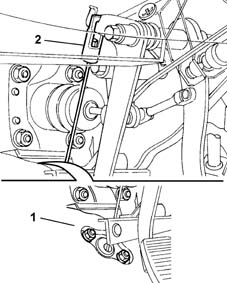
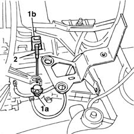

1820A20 release cable - r + r
- Path
- Procedures > 18 CLUTCH > 1820 CLUTCH RELEASE CONTROLS > 1820A clutch release mechanical control > 1820A20 release cable - r + r
- Kind
- repair procedure (removal / refitting; the operation number is the code)
- Applies to
- all engines; all production periods
- Interactive page
- https://sloeber94.github.io/elrnDB-fMltpl/en/#/2891525
Applies to: all engines; all production periods
 Removing
Removing
 Refitting
RefittingOpen the driver's door.
1. Push aside the floor trim.
2. Release the cable from the clutch pedal.
3. Undo the bolts securing the cable rubber mounting.

Applies to: all engines; all production periods
Work from the engine compartment
1048A10 AIR CLEANER FILTERING ELEMENT - REPLACE
1. Disconnect the clutch cable by undoing the nut (1a) and disengaging the cable from the gearbox attachment (1b).
2. Remove the clutch cable from the engine compartment.

Applies to: all engines; all production periods
Refitting
RemovingPosition the clutch cable.
Connect the cable to the clutch pedal.
Tighten the two bolts securing the rubber mounting on the bulkhead.
Connect the cable to the clutch release lever and the attachment on the gearbox.